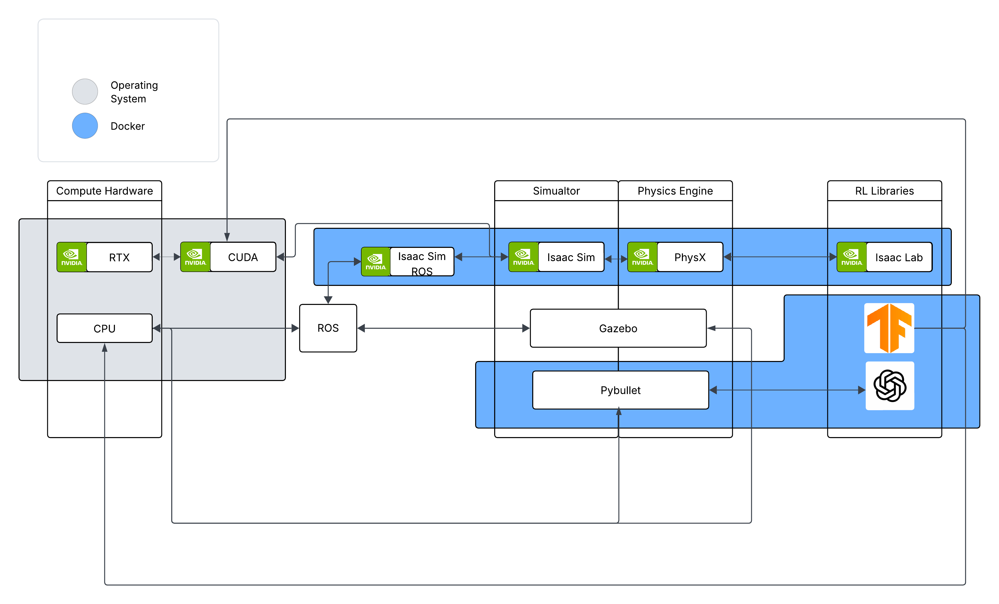
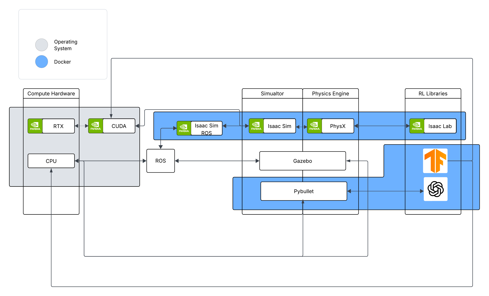

Integrations
Docker images have been made for software that was developed in close proximity with each other.

Clearly there are 2 workflows:
We will discuss each of there in detail.
Docker images have been made for software that was developed in close proximity with each other.

Clearly there are 2 workflows:
We will discuss each of there in detail.